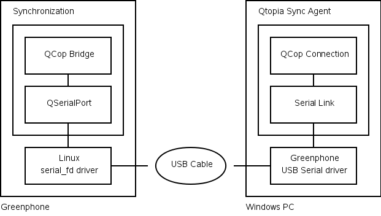

| Qtopia Home · Index · Classes · Headers · Overviews | |
Here is a depiction of a Greenphone connecting to Qtopia Sync Agent on a Windows PC using Serial.

Ensure the QDSYNC_DEFAULT_PORTS define includes "serial".
You must provide a Linux driver that implements a serial interface. On the Greenphone (2.4 kernel) there is the serial_fd driver. This driver works with Windows PCs using the supplied USB serial driver. It also works with the safe_serial driver on Linux PCs but this requires manual setup.
Ensure the Serial plugin has not been disabled. If your device is connecting via USB, you will need a driver. The Greenphone uses the serial_fd driver which works with Windows PCs using the supplied USB serial driver. It also works with the safe_serial driver on Linux PCs but this requires manual setup.
Note that under Windows the Serial plugin is designed to work with proper COM ports. Most USB serial devices do not work correctly and workarounds will need to be created. The Serial plugin can work around the broken COM port implementation used by the Greenphone USB serial driver.
See also Integration Tasks.
| Copyright © 2008 Trolltech | Qtopia Sync Agent Documentation |